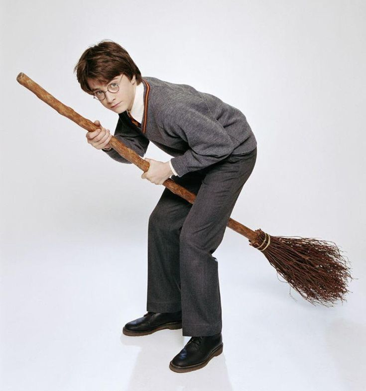
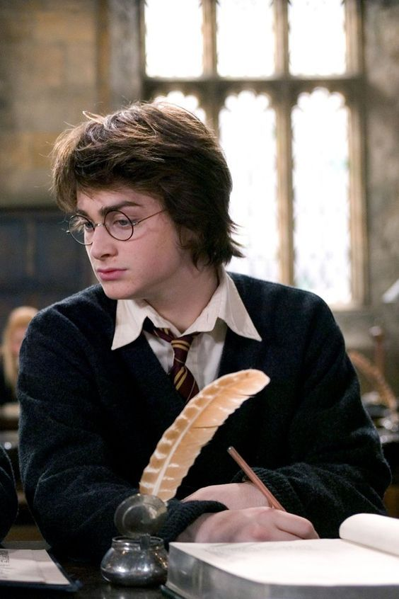
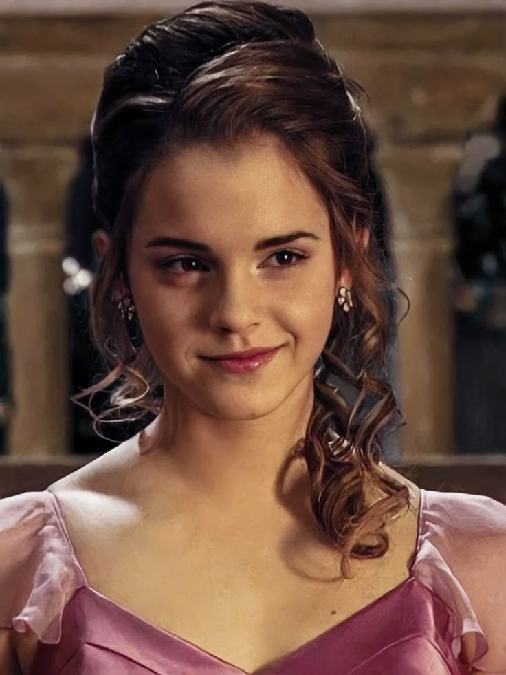
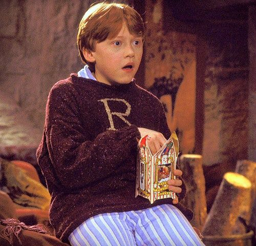
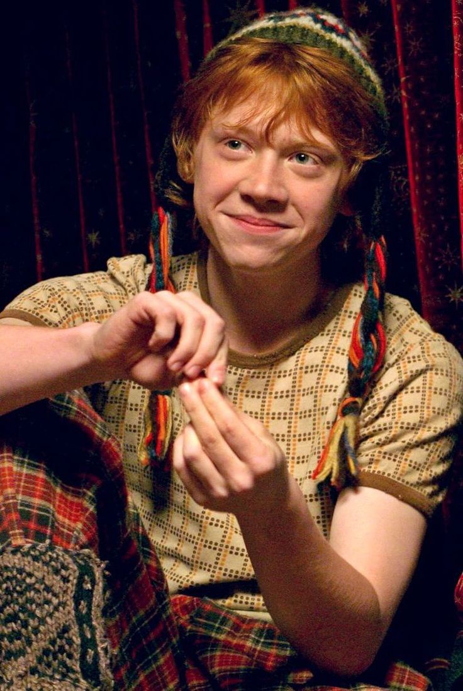
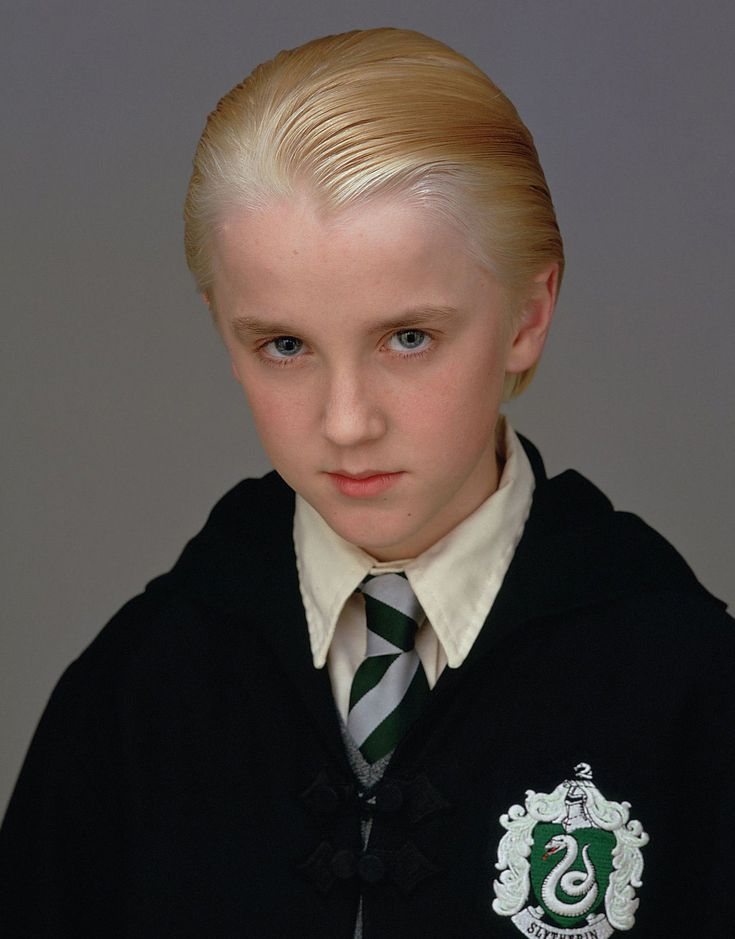
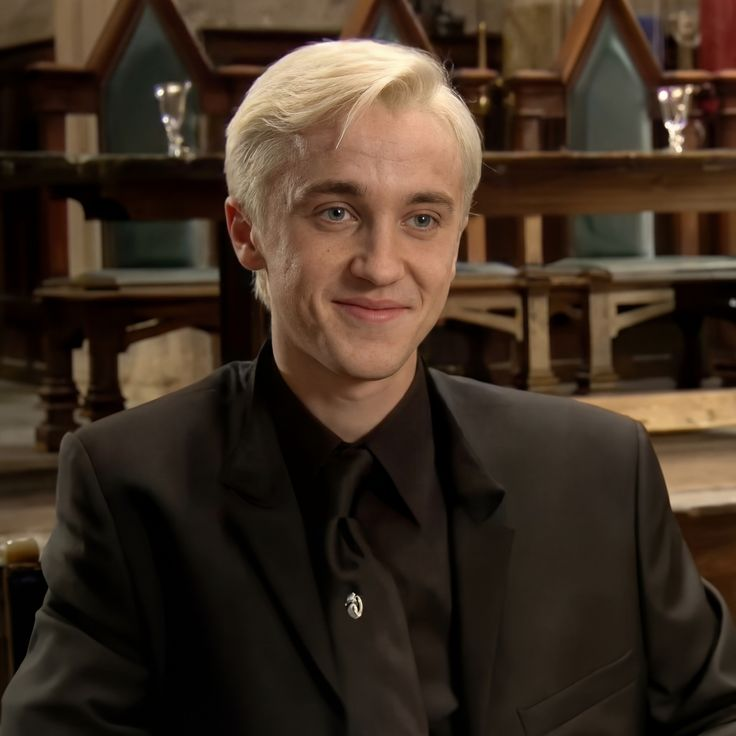
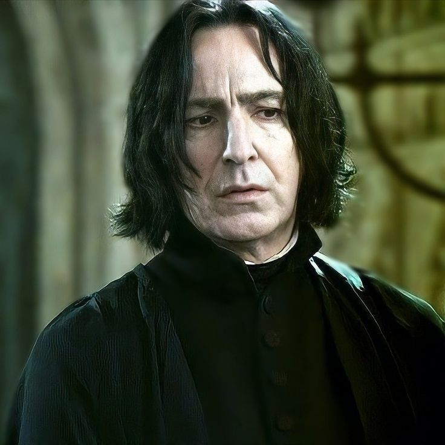
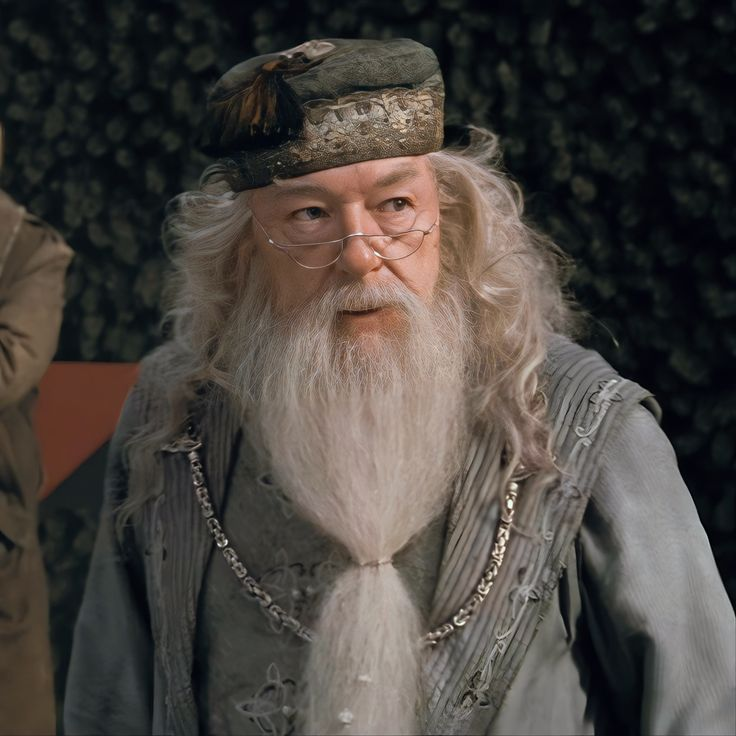
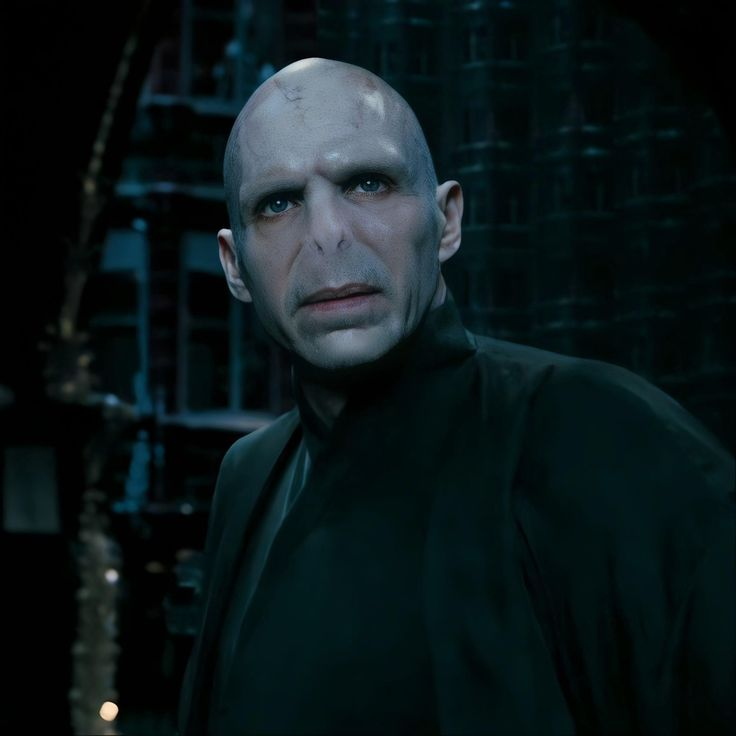

Reparto y personajes principales en Harry Potter
Daniel Radcliffe como Harry Potter


Daniel Radcliffe es el actor que le dio vida a Harry Potter en toda la saga cinematográfica. Fue elegido cuando era muy chico y, a lo largo de los años, su interpretación fue creciendo junto con el personaje.
Su papel fue clave para que el público conecte con la historia desde el principio.
Harry Potter es un joven mago que descubre su identidad y su pasado al ingresar a Hogwarts. A lo largo de las películas, se enfrenta a distintos desafíos, especialmente a su vínculo con Voldemort, lo que lo convierte en el eje principal de la historia.
Una de las cosas que más destacan los fans es cómo Radcliffe logra mostrar la evolución de Harry, pasando de ser un niño curioso a un personaje más maduro y valiente. Esa transformación hace que la historia se sienta más real y cercana.
Gracias a este papel, Daniel Radcliffe quedó muy asociado al mundo de Harry Potter, convirtiéndose en una figura reconocida dentro del cine. Su interpretación ayudó a que el personaje se vuelva icónico para toda una generación.
Emma Watson como Hermione Granger


Emma Watson interpretó a Hermione Granger, uno de los personajes más importantes de la saga. Desde el inicio, su actuación ayudó a construir una figura inteligente, responsable y muy decidida, que rápidamente se volvió clave dentro del grupo.
Hermione es una estudiante brillante de Hogwarts, conocida por su conocimiento y su capacidad para resolver problemas.
A lo largo de la historia, demuestra que la inteligencia y el esfuerzo pueden ser tan importantes como la magia misma.
Lo que más destaca del personaje es su evolución, pasando de ser alguien muy estricta con las reglas a tomar decisiones más complejas por el bien de sus amigos. Su amistad con Harry y Ron es uno de los pilares de la historia.
Gracias a este papel, Emma Watson se convirtió en una figura muy reconocida y querida por el público, siendo Hermione un personaje que muchas personas admiran por su personalidad y valores.
Rupert Grint como Ron Weasley


Rupert Grint dio vida a Ron Weasley, el mejor amigo de Harry Potter y uno de los personajes más queridos de la saga. Su interpretación aportó un equilibrio entre humor, lealtad y emociones más reales dentro del grupo.
Ron es parte de una familia numerosa de magos y, aunque a veces se siente inseguro, demuestra ser valiente en los momentos más importantes. Su relación con Harry y Hermione es fundamental para el desarrollo de la historia.
A lo largo de las películas, su personaje crece mucho, enfrentando sus propios miedos y aprendiendo a confiar más en sí mismo. Esto hace que el público pueda identificarse fácilmente con él.
Rupert Grint logró que Ron sea recordado no solo por su humor, sino también por su lealtad y su importancia dentro del grupo principal.
Tom Felton como Draco Malfoy


Tom Felton interpretó a Draco Malfoy, uno de los personajes más complejos dentro de la saga. Desde el principio, se presenta como rival de Harry Potter, mostrando una actitud arrogante y competitiva, influenciada por su familia.
Draco es estudiante de Hogwarts y pertenece a la casa Slytherin. A lo largo de la historia, su personaje está muy marcado por las expectativas de su entorno, lo que lo lleva a tomar decisiones difíciles y, en algunos casos, equivocadas.
Con el paso de las películas, se puede ver una evolución en su personaje, donde aparecen dudas, miedo y conflictos internos. Esto hace que deje de ser solo un “villano” y se vuelva más humano y entendible.
Tom Felton fue clave para darle profundidad a Draco, logrando que muchos fans vean más allá de su rol inicial y lo consideren uno de los personajes más interesantes de la saga.
Alan Rickman como Severus Snape

Alan Rickman interpretó a Severus Snape, uno de los personajes más enigmáticos de la saga. Desde el inicio, se muestra como un profesor estricto y distante, generando dudas sobre sus verdaderas intenciones.
Snape es profesor en Hogwarts y tiene una relación compleja con Harry Potter. A lo largo de la historia, su comportamiento parece ambiguo, lo que hace que el público no tenga claro de qué lado está realmente.
Con el paso de las películas, se revela la profundidad de su personaje, mostrando un trasfondo marcado por el amor, el sacrificio y decisiones difíciles. Esto cambia completamente la forma en que se lo percibe.
La actuación de Alan Rickman fue clave para construir este misterio, convirtiendo a Snape en uno de los personajes más recordados y valorados por los fans.
Michael Gambon como Albus Dumbledore

Michael Gambon interpretó a Albus Dumbledore en la mayor parte de la saga, dando vida al director de Hogwarts. Es un personaje que transmite sabiduría, calma y una fuerte presencia dentro del mundo mágico.
Dumbledore es una figura clave en la historia, actuando como guía para Harry y tomando decisiones importantes en la lucha contra Voldemort. Su forma de ver el mundo influye en muchos de los acontecimientos de la saga.
A lo largo de las películas, se muestra que no es un personaje perfecto, sino alguien que también carga con errores y secretos. Esto le da más profundidad y lo vuelve más interesante.
La interpretación de Gambon ayudó a mantener la importancia del personaje, consolidándolo como una de las figuras centrales del universo de Harry Potter.
Ralph Fiennes como Lord Voldemort

Ralph Fiennes interpretó a Lord Voldemort, el principal villano de la saga. Es un personaje que representa el poder, el miedo y la obsesión por la inmortalidad.
Voldemort es el enemigo directo de Harry Potter y el responsable de muchos de los conflictos en la historia. Su pasado y sus decisiones marcan gran parte del desarrollo del mundo mágico.
A lo largo de las películas, se muestra su evolución y cómo su búsqueda de poder lo lleva a perder su humanidad. Esto lo convierte en un antagonista complejo y no solo en un villano tradicional.
Ralph Fiennes fue fundamental para darle presencia y fuerza al personaje, logrando que Voldemort sea una figura icónica dentro del cine.